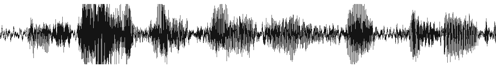
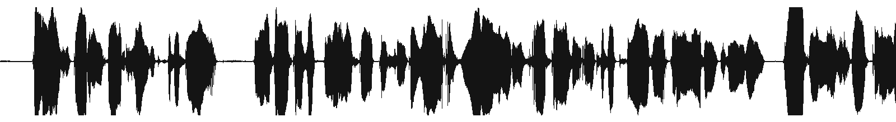
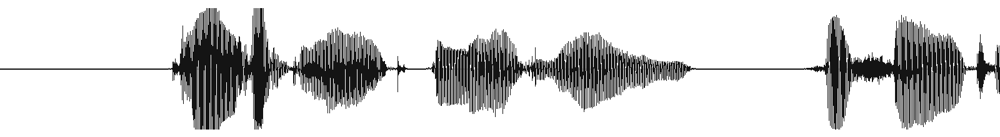
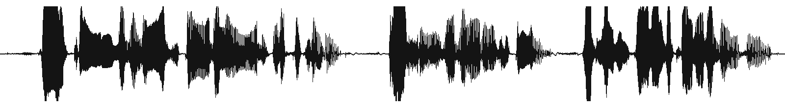
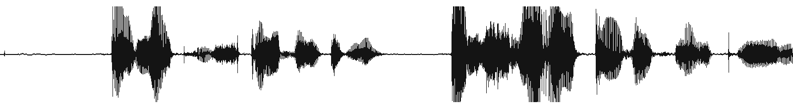
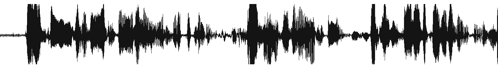

Status: Frozen evaluations and audio examples complete.
Overview
TSE can extract the wrong speaker; LLM generation can also change words or identity. We repair target-speaker evidence before grounding generation.
Repair before grounding. CDCS-5 reduces clean wrong-speaker errors from 6.87% to 0.75%. On Noisy TEST, fixed CSG reduces content switching from 12.79% to 9.10%. See paper results ↓
Problem formulationWhy repair must precede grounding
(a) Deterministic waveform TSE

Mixture y · A + B + noise

Target enrolment r · speaker A
↓
BSRNN-TSEglobal-embedding baseline · frozen

Distorted target A

Interferer B
No autoregressive token hallucination
May distort speech or follow the interferer
(b) Ungrounded generation
Mixture features MSpeaker condition S
↓
Qwen-TSE-UD
↓

Perceptually plausible output
Higher predicted naturalness
Content substitution / insertion · speaker drift
(c) Grounding a bad anchor

Confused estimate B
→
zᴮ
→
CSG
↓
Confident wrong-speaker output B
Grounding can preserve a bad anchor
Constraining drift does not repair identity
(d) Our principle
Five frozen TSE candidates↓CDCS-5↓Target-consistent evidence c*
Problem illustration. TSE can follow the wrong speaker; generation can drift; grounding can preserve a wrong-speaker anchor. CDCS-5 repairs evidence before fixed or adaptive CSG constrains generation. Waveforms are amplitude-normalized traces from released examples, not necessarily the same trial.
Paper Figure 1. Repair before grounding: (a) CDCS-5 selects target-speaker-consistent evidence, (b) the selected waveform is returned directly or tokenized for Qwen-TSE, and (c) CSG constrains autoregressive decoding. Full resolution ↗
Method
CDCS-5 selects the most enrollment-consistent of five frozen TSE candidates. Its waveform is returned directly or used to ground Qwen-TSE. Fixed CSG uses (λ, w) = (1, 0). Adaptive CSG uses λ = g(ξ) and w = 1, with a DEV-frozen decreasing map and one strength per utterance. Both use no clean references, transcripts, oracle labels, or model updates. Grounding constrains drift; it cannot repair a wrong-speaker anchor.
Token-level grounding intuition
Each acoustic token has eight ternary FSQ coordinates. CSG changes Qwen-TSE token selection, not the CDCS-5 selector.
1
Qwen-TSE proposes
High-scoring next tokens can drift from the evidence.
EvidenceRaw proposal
02110201
22012200
2
CSG constrains
Penalize tokens with greater Hamming distance from the evidence.
sCSG(v,t) = sLLM(v,t) − λ min dH(v,zᵉt+δ)
Fixedλ = 1, w = 0Adaptiveλ = g(ξ), w = 1
near: small penaltyfar: large penalty
3
Adaptive CSG sets strength
A mixture–evidence projection score sets one grounding strength per utterance through a DEV-frozen decreasing map.
Grounding intuition. Fixed CSG uses λ = 1, w = 0; adaptive CSG uses λ = g(ξ), w = 1. Strength stays constant during each decode. The mapping is selected on DEV and kept fixed for TEST.
Audio examples
One clean and four noisy examples from frozen TEST evaluations. Clean targets and interferers are for evaluation only, never system inputs.
Listen for: speaker identity, word accuracy, and the fidelity–naturalness trade-off.
BSRNN-TSE follows the interferer. A two-second enrollment view recovers the target: WER: 100% → 0%,
speaker margin: −0.285 → +0.520, and
A-sw.: 1 → 0.
Input, enrollment & interferer
Clean mixturesystem input
Target enrollmentspeaker condition
Clean interfererevaluation only
Clean targetevaluation only
BSRNN-TSEwrong speaker · WER 100%
BSRNN-TSE-CDCS-5middle view · WER 0%
Whisper large-v3 · greedy English · repetition penalty 1.10 · ASR target reference
Target · large-v3
this attitude springs from a false conception of sin the conception that sin is a small matter easily taken care of by good works
BSRNN-TSE · large-v3
he obtained the desired speed and load with a friction brake also regulated speed but waited for an indicator to verify it WER 100%
BSRNN-TSE-CDCS-5 · large-v3
this attitude springs from a false conception of sin the conception that sin is a small matter easily taken care of by good works WER 0%
Speaker confusion: the extracted words and voice match the interferer, even without noise.
SpectrogramClean target, clean interferer, wrong-speaker BSRNN-TSE, and the target-consistent middle-view candidate selected by CDCS-5. Select the figure for the 2,000-pixel original.
Example 2 — BSRNN-TSE extracts the wrong speaker under noise
BSRNN-TSE follows the interferer. CDCS-5 selects the TF-map/context candidate; fixed CSG preserves the repaired target content: WER: 144.44% → 0% and
A-sw.: 1 → 0.
Input, enrollment & interferer
Noisy mixturesystem input
Target enrollmentspeaker condition
Clean interfererevaluation only
Clean targetevaluation only
BSRNN-TSEwrong speaker · WER 144.44%
BSRNN-TSE-CDCS-5repaired evidence · WER 11.11%
Qwen-TSE-UDWER 0%
Qwen-TSE-fixed-CSGgrounded · WER 0%
Whisper large-v3 · greedy English · repetition penalty 1.10 · ASR target reference
Target · large-v3
through the black night rain he sang to me
BSRNN-TSE · large-v3
in the stern i carved the tail up almost as high as the head WER 144.44%
BSRNN-TSE-CDCS-5 · large-v3
through the black night rain he sang to WER 11.11%
Qwen-TSE-UD · large-v3
through the black night rain he sang to me WER 0%
Qwen-TSE-fixed-CSG · large-v3
through the black night rain he sang to me WER 0%
Repair identity first: MOS alone misses wrong-speaker extraction. Both Qwen variants preserve the target transcript here.
SpectrogramClean target, wrong-speaker BSRNN-TSE, repaired BSRNN-TSE-CDCS-5 evidence, and Qwen-TSE-fixed-CSG output. Select the figure for the 2,000-pixel original.
Example 3 — grounding blocks speaker collapse
Qwen-TSE-UD collapses despite target-consistent evidence. Fixed CSG restores identity and most words: UD WER = 100% → CSG WER = 25% and
A-sw.: 1 → 0.
Input, enrollment & interferer
Noisy mixturesystem input
Target enrollmentspeaker condition
Clean interfererevaluation only
Clean targetevaluation only
BSRNN-TSEWER 0%
BSRNN-TSE-CDCS-5target-consistent · WER 16.67%
Qwen-TSE-UDspeaker collapse · WER 100%
Qwen-TSE-fixed-CSGspeaker restored · WER 25%
Whisper large-v3 · greedy English · repetition penalty 1.10 · ASR target reference
Target · large-v3
she had almost forgotten that it was here within touch and sight
BSRNN-TSE-CDCS-5 · large-v3
she had almost forgotten that it was here he can touch and sight WER 16.67%
Qwen-TSE-UD · large-v3
you WER 100%
Qwen-TSE-fixed-CSG · large-v3
she had almost forgotten that it was here they didnt touch and sigh WER 25%
Grounding matters: fixed CSG anchors generation to the target evidence.
SpectrogramClean target, BSRNN-TSE-CDCS-5 evidence, Qwen-TSE-UD speaker collapse, and Qwen-TSE-fixed-CSG recovery. Select the figure for the 2,000-pixel original.
Example 4 — a large-v3 transcript-agreement control
All displayed outputs match the target transcript under large-v3 (WER = 0%). Listen for differences that ASR does not capture.
Input, enrollment & interferer
Noisy mixturesystem input
Target enrollmentspeaker condition
Clean interfererevaluation only
Clean targetevaluation only
BSRNN-TSEWER 0%
BSRNN-TSE-CDCS-5repaired evidence · WER 0%
Qwen-TSE-UDlarge-v3 WER 0%
Qwen-TSE-fixed-CSGlarge-v3 WER 0%
Whisper large-v3 · greedy English · repetition penalty 1.10 · ASR target reference
Target · large-v3
in actual fact there are doubtless various
All displayed outputs · large-v3
in actual fact there are doubtless various WER 0%
Listen beyond WER: matching ASR transcripts do not imply identical sound.
SpectrogramClean target, BSRNN-TSE-CDCS-5 evidence, Qwen-TSE-UD, and Qwen-TSE-fixed-CSG all receive the same exact large-v3 transcript in this listening control. Select the figure for the 2,000-pixel original.
Example 5 — fidelity–naturalness operating points
Both endpoints preserve the target words and identity. Grounded generation raises predicted naturalness but lowers eSTOI: UTMOS: 1.307 → 3.827, with
eSTOI: 0.692 → 0.621. No per-case DNSMOS P.808 score is available.
Input, enrollment & interferer
Noisy mixturesystem input
Target enrollmentspeaker condition
Clean interfererevaluation only
Clean targetevaluation only
BSRNN-TSEWER 0% · UTMOS 1.48
BSRNN-TSE-CDCS-5WER 0% · UTMOS 1.31
Qwen-TSE-UDWER 0% · UTMOS 3.78
Qwen-TSE-fixed-CSGWER 0% · UTMOS 3.83
Whisper large-v3 · greedy English · repetition penalty 1.10 · ASR target reference
Target · large-v3
i tell him to give me some coffee if it is good
All displayed outputs · large-v3
i tell him to give me some coffee if it is good WER 0%
Trade-off: direct extraction favors fidelity; fixed CSG improves predicted naturalness here, with lower eSTOI.
SpectrogramClean target, BSRNN-TSE-CDCS-5, Qwen-TSE-UD, and Qwen-TSE-fixed-CSG. Select the figure for the 2,000-pixel original.
Illustrative cases, not aggregate results. Waveforms and case selection are unchanged; displayed transcripts and WER use one large-v3 configuration. Full selection rules and results: clean record · noisy record.
Results from the paper
Evidence repair and grounded generation
CDCS-5 reduces speaker confusion. CSG further stabilizes the generative branch while retaining its predicted-quality advantage.
6,000 natural-noise + 2,400 controlled-SNR trials. All systems use the same evaluation pool.
Noisy TEST · Table 1
System
WER ↓%
C-sw. ↓%
A-sw. ↓%
Spk. margin ↑
DNSMOS ↑P.808
UTMOS ↑
BSRNN-TSE
39.85
18.79
18.23
0.266
3.031
2.001
BSRNN-TSE-CDCS-5
30.67
11.02
10.39
0.327
2.980
1.948
Qwen-TSE-UD
46.70
12.79
1.68
0.377
3.494
3.216
Qwen-TSE-fixed-CSG
42.11
9.10
0.51
0.386
3.498
3.147
Qwen-TSE-adaptive-CSG
42.73
9.37
0.53
0.388
3.503
3.253
3,000 clean mixtures, evaluated in both target-speaker directions.
Clean TEST · Table 1
System
WER ↓%
C-sw. ↓%
A-sw. ↓%
Spk. margin ↑
DNSMOS ↑P.808
UTMOS ↑
BSRNN-TSE
11.41
7.00
6.98
0.449
3.688
3.606
BSRNN-TSE-CDCS-5
7.02
0.88
0.78
0.506
3.699
3.647
Qwen-TSE-UD
8.99
0.92
0.43
0.421
3.705
3.913
Qwen-TSE-fixed-CSG
8.04
0.92
0.23
0.422
3.699
3.910
Qwen-TSE-adaptive-CSG
8.12
0.90
0.20
0.421
3.711
3.921
Bold: best value per column and condition. CDCS-5 returns the repaired waveform; fixed/adaptive CSG ground the same Qwen-TSE checkpoint. WER measures agreement with automatic target transcripts. DNSMOS and UTMOS predict quality.
Paper Figure 2. Controlled-noise TEST, 480 trials per SNR. Acoustic-switch rate uses a logarithmic axis; quality is DNSMOS P.808. Full resolution ↗CDCS-5 ablation & selection safety Table 2
Full/TF use the complete enrollment; E/M/L use early, middle and late local views. Wrong-speaker errors use the SI-SDR margin, not the CAMPPlus acoustic-switch definition in Table 1.
Table 2(a) · Wrong-speaker errors (%, ↓)
Configuration
Clean DEV
Clean TEST
Noisy DEV
Noisy TEST
Full (no CDCS)
6.90
6.87
19.85
18.95
Early (E)
8.52
8.57
20.61
19.96
Middle (M)
8.27
8.90
20.92
20.73
Late (L)
8.52
8.50
20.71
20.18
TF-context (TF)
2.35
2.53
14.32
14.37
Full + E/M/L
3.70
3.60
15.96
15.00
Full + TF
1.17
1.18
12.00
11.30
CDCS-5
0.88
0.75
11.02
10.46
Table 2(b) · High-confidence confusion recovery & new errors
Split
CDCS-5 recovery
Oracle availability
New errors
Clean TEST
355/398 (89.20%)
360/398 (90.45%)
2/5,588 (0.04%)
Noisy TEST
374/646 (57.89%)
431/646 (66.72%)
8/4,709 (0.17%)
Recovery and new-error rates use their respective high-confidence subsets, shown in the denominators. Oracle availability uses clean references for analysis only; CDCS never receives these references.
Listening audit · selected Natural Noisy TEST example
When Whisper-based WER becomes misleading
A generated waveform and its ASR transcript can fail in different ways. This example shows why we interpret WER together with audio, speaker consistency and predicted quality.
7.68 seconds of audio. 419 insertion errors.
ASR transcript repetition
Whisper large-v3 transcribes the UD output as “out zander paced up and down the hallway f f f …”. The repeated transcript dominates WER; it does not establish that the waveform contains hundreds of spoken repetitions.
17 substitutions+0 deletions+419 insertions
23 reference words
× 100% =1,895.65% WER
WER = (S + D + I) / reference words × 100%. Insertions can push it above 100%.
Clean targetReference audio · evaluation only
Qwen-TSE-UD7.68 s · WER 1,895.65% · speaker margin +0.467
Qwen-TSE-fixed-CSG7.68 s · WER 34.78% · speaker margin +0.485
BSRNN-TSE-CDCS-57.67 s · WER 8.70%
Read the target, UD and grounded ASR transcripts
Clean target · Whisper large-v3
alexander paced up and down the hallway buttoning and unbuttoning his overcoat until she returned and took him up to hildas living room
UD · full automatic transcript
out zander paced up and down the hallway f f f f f f f f f f f f f f f f f f f f f f f f f f f f f f f f f f f f f f f f f f f f f f f f f f f f f f f f f f f f f f f f f f f f f f f f f f f f f f f f f f f f f f f f f f f f f f f f f f f f f f f f f f f f f f f f f f f f f f f f f f f f f f f f f f f f f f f f f f f f f f f f f f f f f f f f f f f f f f f f f f f f f f f f f f f f f f f f f f f f f f f f f f f f f f f f f f f f f f f f f f f f f f f f f f f f f f f f f f f f f f f f f f f f f f f f f f f f f f f f f f f f f f f f f f f f f f f f f f f f f f f f f f f f f f f f f f f f f f f f f f f f f f f f f f f f f f f f f f f f f f f f f f f f f f f f f f f f f f f f f f f f f f f f f f f f f f f f f f f f f f f f f f f f f f f f f f f f f f f f f f f f f f f f f f f f f f f f f f f f f f f f f f f f f f f f f f f f f f f f f f f f f f f f f f f f f f f f f f f f f f f f f f f f f f f f f f
Fixed CSG · Whisper large-v3
alexander paced up and down the hallway buttoning and unbuttoning his overcoat until she returned into the hotel of his
What is measured: an insertion-heavy ASR transcript, against a 23-word automatic reference.
What to listen for: actual words and repetitions in the waveform. A positive speaker margin confirms neither transcription accuracy nor correct content.
What remains unverified: the exact split between speech-generation and recognition errors; this audit has no human-adjudicated transcript or second-recognizer check.
Post-hoc example, selected for the largest large-v3 insertion count in the complete Natural Noisy TEST audit. English transcription, greedy decoding, repetition penalty 1.10. Clean-target reference text is also automatic. This is not a failure-rate estimate. Full audit & audio hashes.
Frozen Natural Noisy TEST · selected examples
Why can LLM-based TSE have high WER?
Generation can change words even when the voice sounds right. These three cases show when grounding helps—and when it fails.
Listen first. WER and reference transcripts use Whisper large-v3, not human transcription; ASR errors can also inflate WER.
Case 01Fixed-CSG repair
Grounding repairs missing content
UD is transcribed as “thank you” (100% WER). Fixed CSG matches all eight words of the automatic target transcript and yields a positive speaker margin.
UD 100%Fixed 0%Adaptive 0%
Input & references
Noisy mixture5.13 s · system input
Clean targetevaluation only
Clean interfererevaluation only
BSRNN-TSE-CDCS-5large-v3 WER 0%
Qwen-TSE-UDA-sw. · “thank you”
Qwen-TSE-fixed-CSGWER 0% · margin +0.397
Qwen-TSE-adaptive-CSGlarge-v3 WER 0%
ASR transcripts
Target
suddenly the ichthyosaurus and the plesiosaurus disappear below
Qwen-TSE-UD · large-v3
thank you WER 100% · A-sw.
Qwen-TSE-fixed-CSG · large-v3
suddenly the ichthyosaurus and the plesiosaurus disappear below WER 0%
Case 02Identity/content separation
Target-like voice, wrong words
The automatic transcripts differ from the target transcript, despite positive speaker margins. Voice similarity alone does not establish content accuracy.
UD 124%Fixed 112%Adaptive 112%
Input & references
Noisy mixture9.01 s · system input
Clean targetevaluation only
Clean interfererevaluation only
BSRNN-TSE-CDCS-5A-sw. · large-v3 WER 104%
Qwen-TSE-UDWER 124% · margin +0.107
Qwen-TSE-fixed-CSGWER 112% · margin +0.138
Qwen-TSE-adaptive-CSGWER 112% · margin +0.133
ASR transcripts
Target · large-v3
ill gladly do that promised the new boolaroo and ill feed the honourable goat all the shavings and leather and tin cans he can eat
Qwen-TSE-fixed-CSG · large-v3
of course he did not realize that it was i who was nodding but nonetheless his conduct was very uncourteous and indeed out of the circumstance he was rather suspicious fine WER 112%
The transcript drifts while the speaker encoder remains on the target side.
Case 03Fixed-CSG regression
Grounding can also fail
The fixed-CSG transcript diverges further from the target: WER rises from 85.71% to 128.57%, with an acoustic speaker switch.
UD 85.71%Fixed 128.57%Adaptive 185.71%
Input & references
Noisy mixture3.30 s · system input
Clean targetevaluation only
Clean interfererevaluation only
BSRNN-TSE-CDCS-5A-sw. · large-v3 WER 214.29%
Qwen-TSE-UDlarge-v3: “you”
Qwen-TSE-fixed-CSGA-sw. · WER 128.57%
Qwen-TSE-adaptive-CSGWER 185.71%
ASR transcripts
Target · large-v3
sometime youll tell me please wont you
Qwen-TSE-UD · large-v3
you WER 85.71%
Qwen-TSE-fixed-CSG · large-v3
for me i was just like oh my god WER 128.57% · A-sw.